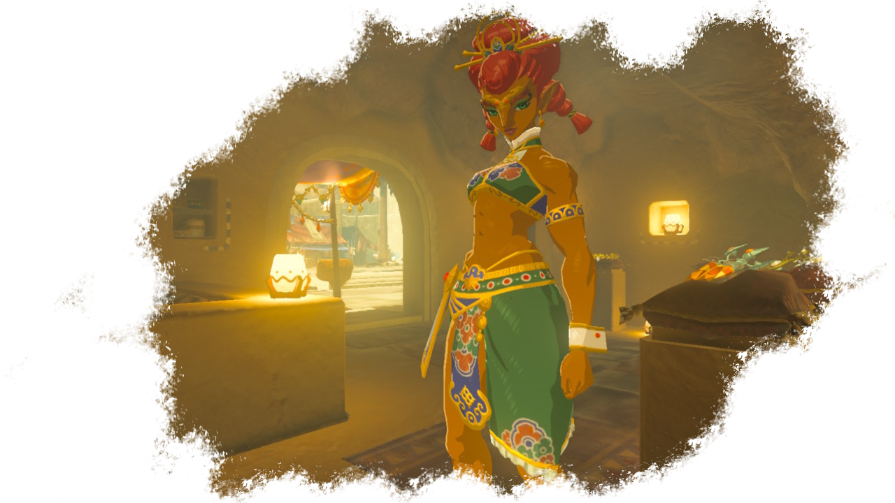
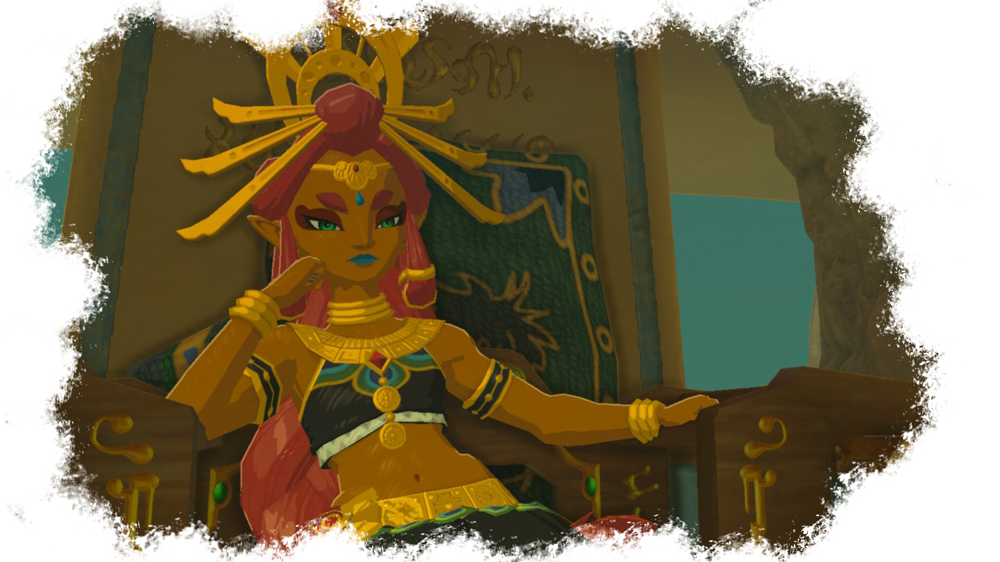
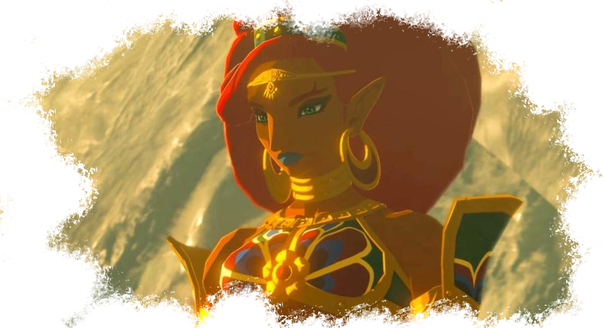

Les Gerudos

Les Gerudos sont le peuple du désert. Cette tribu est uniquement composée de femmes et est un peuple ayant une culture et des traditions guerrières. Ces femmes ont la peau plus ou moins foncée à cause de leur exposition au soleil.
Les gerudo sont grandes, robustes, musclées, élancées, belles, et surtout: potentiellement mortelles si vous osez les affronter.
La tribu est dirigée par Riju, une descendante de la prodige Urbosa. Elle a hérité du trône de sa mère, morte quand elle était très jeune. La jeune fille est toujours une jeune adolescente. Bien que jeune, elle est soutenue et aimée de son peuple, et surtout très bien entourée et conseillée.
Elle est toujours accompagnée de Beterah, sa garde du corps et conseillère principale. La guerrière n'a pas peur de se montrer agressive dès que quelqu'un manque de respect aux traditions gerudo ou à sa reine.

La cité gerudo est située dans le désert gerudo, dans les contrées du même nom. Elle est un havre de paix et d'exotisme, pleine de couleurs et d'un charme unique. La cité est réservée aux femmes. Les hommes ne sont pas autorisés à entrer et sont chassés par la garde s'ils arrivaient à s'infintrer, ce qui relève du miracle tant elle est bien gardée. Seuls les gorons y sont autorisés. Pour s'y infiltrer, Link doit se déguiser en femme en portant des vêtements locaux achetés à un marchand louche.
Bien qu'ayant des coutûmes gierrières, les gerudos sont pacifiques et ne cherchent pas la confrontation avec les autres races. Elles ont un rite appelé "la chasse au voï" bien particulier: les femmes sont exilées de leur cité et doivent parcourir la région à la recherche d'un homme (hylien) à épouser. Cette pratique est un moyen pour elles de procréer, puisque les gerudos accouchent quasi exclusivement de filles. Les gerudos ont même des cours leur apprenant comment séduire un voï et faire les tâches ménagères, choses qu'elles détestent.
Par conséquent, bien que beaucoup restent dans leur cité ou à proximité, le peuple gerudo est par nature très enclin au voyage et à un mode de vie plus nomade que les autres.

Lorsque Link parvient à entrer dans la ville et à aller voir Riju pour lui parler de la créature Divine qui menace la région, la jeune reine parvient à le reconnaître grâce à la tablette et découvre tout de suite qu'il est un homme. Grâce aux conseils de Beterah, elle se décide à lui venir en aide à la condition que celui-ci parvienne à reprendre le masque du tonerre aux Yigas qui sont parvenus à infiltrer la cité pour le voler.
Une fois sa mission accomplie, Link collabore avec la jeune reine elle-même pour parvenir à gagner l'intérieur de Vah'Naboris pour parvenir enfin à apaiser la bête et libérer l'âme de son ancienne camarade prodige, Urbosa.

La gerudo la plus connue est sans conteste Urbosa, prodige choisie par la famille royale Hylienne pour être la pilote de Vah'Naboris. Celle-ci était déjà une proche de Zelda et surtout de sa mère qu'elle a très bien connue.
Ganondorf est également à mentionner ici, puisque la prodige elle-même sait que le fléau était, alors qu'il possédait encore une forme humaine, le roi de la tribu gerudo.
Le peuple du désert à joué un rôle considérable dans l'histoire de la région toute entière. Que ce soit dans le bon ou dans le mauvais, l'influence de cette culture a résonné, résonne et résonnera sur Hyrule.
